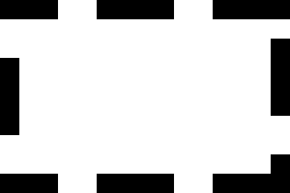
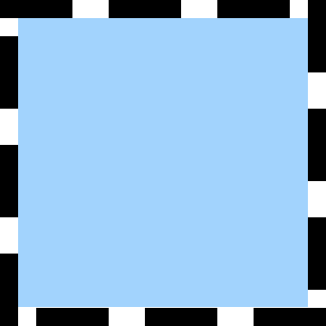
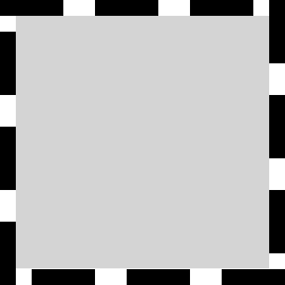
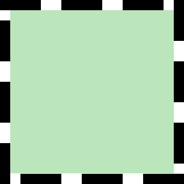
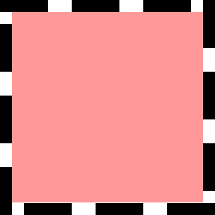
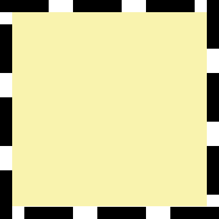

<mat-card-title>{{ 'AMap.Map' | translate }}</mat-card-title>
<div id='container' style='width:100%; height:720px;'></div>
<div id="wpsettings" *ngIf="closewp">
    <div id="wpsettings-content" class="panel panel-default wpsetting">
        <div class="panel-heading">
            <button class="btn btn-danger" (click)="deleteMarker()">Delete</button>
            <h3>WAYPOINT {{ wayPointId }} SETTINGS</h3>
            <button mat-icon-button class="close" (click)="closewp = false">
                <mat-icon>cancel</mat-icon>
            </button>
        </div>
        <div class="panel-body" style="width: 400px;">
            <div class="body-wpsetting">
                <div class="lat-lng">
                    <div class="lat-width">
                        <span matPrefix>Latitude&nbsp;</span>
                        <input type="lat" name="lat" [(ngModel)]="latitude" disabled="true">
                    </div>
                    <div class="lng-width">
                        <span matPrefix>Longitude&nbsp;</span>
                        <input type="lng" name="lng" [(ngModel)]="longitiude" disabled="true">
                    </div>
                </div>
                <div class="Altitude">
                    <span matPrefix>Altitude&nbsp;</span>
                    <input name="altitude" [(ngModel)]="altitude" (change)="editFlightPath()">
                    <mat-slider [max]="100" [min]="-20" [step]="1" thumbLabel [vertical]="vertical" [(ngModel)]="altitude" (change)="editFlightPath()">
                    </mat-slider>
                </div>
                <div class="Speed">
                    <span matPrefix>Speed&nbsp;&nbsp;&nbsp;</span>
                    <input name="Speed" [(ngModel)]="speed" (change)="editFlightPath()">
                    <mat-slider [max]="100" [min]="0" [step]="1" thumbLabel [vertical]="vertical" [(ngModel)]="speed" (change)="editFlightPath()">
                    </mat-slider>
                </div>
                <div class="Heading">
                    <label for="heading">Heading</label>
                    <select id="heading" [(ngModel)]="heading" (change)="editFlightPath()">
                        <option value="AUTO">Auto</option>
                        <option value="CONTROL_BY_REMOTE_CONTROLLER">RC Control</option>
                        <option value="TOWARD_POINT_OF_INTEREST">Interest</option>
                        <option value="USING_INITIAL_DIRECTION">Initial</option>
                        <option value="USING_WAYPOINT_HEADING">Use Waypoint</option>
                    </select>
                </div>
                <div class="ActionAfterFinished">
                    <label for="actionAfterFinished">Action After Finished</label>
                    <select id="actionAfterFinished" [(ngModel)]="actionAfterFinished" (change)="editFlightPath()">
                        <option value="AUTO">Auto</option>
                        <option value="CONTROL_BY_REMOTE_CONTROLLER">RC Control</option>
                        <option value="USING_INITIAL_DIRECTION">Initial</option>
                        <option value="USING_WAYPOINT_HEADING">Use Waypoint</option>
                    </select>
                </div>
            </div>
        </div>
        <div class="panel-footer">
            <button class="btn-bottom" style="margin-right: 10px;"><</button>
            <button class="btn-bottom">></button>
        </div>
    </div>
</div>
<!-- <mat-card class="draw-func">
    <div>
        <div class="input-item">
            <input type="radio" name='func' value='marker' (change)="draw('location')"><span class="input-text">{{ 'AMap.GroundStation' | translate }}</span>
            <input type="radio" name='func' value='polyline' (change)="draw('flyArea')"><span class="input-text">{{ 'AMap.FlyingRange' | translate }}</span>
            <input type="radio" name='func' value='polygon'(change)="draw('showArea')" ><span class="input-text">{{ 'AMap.PerformanceArea' | translate }}</span>
            <input type="radio" name='func' value='polygon' (change)="draw('eleFence')"><span class="input-text">{{ 'AMap.ElectronicFence' | translate }}</span>
        </div>
        <div class="input-item">
            <input type="radio" name='func' value='polygon' (change)="draw('viewer')"><span class="input-text">{{ 'AMap.ViewingArea' | translate }}</span>
            <input type="radio" name='func' value='polygon' (change)="draw('landing')"><span class="input-text">{{ 'AMap.TakeoffAndLandingArea' | translate }}</span>
            <input type="radio" name='func' value='polygon' (change)="draw('reserve')"><span class="input-text">{{ 'AMap.AlternateArea' | translate }}</span>
        </div>
        <div class="input-item">
            <input id="clear" type="button" class="btn" value="{{ 'AMap.ClearAll' | translate }}"  (click)="clear()"/>
            <input id="close" type="button" class="btn" value="{{ 'AMap.CloseDraw' | translate }}" (click)="closeDraw()" />
            <input id="laststep" type="button" class="btn" value="{{ 'AMap.ToWithdraw' | translate }}" [disabled]="lastStepDisanled" (click)="lastStep()" />
        </div>
        <div class="input-item">
            <input id="clear" type="button" class="btn" value="新建"  (click)="createPolygon()"/>
            <input id="clear" type="button" class="btn" value="开始编辑"  (click)="startEditor()"/>
            <input id="close" type="button" class="btn" value="关闭编辑" (click)="closeEditor()" />
        </div>
    </div>
</mat-card> -->
<!-- <mat-card class="input-card show-area">
    <div class="location">
        <span>{{ 'AMap.GroundStation' | translate }}</span>
        
    </div>
    <div class="flyArea">
        <span>{{ 'AMap.FlyingRange' | translate }}</span>
        
    </div>
    <div class="showArea">
        <span>{{ 'AMap.PerformanceArea' | translate }}</span>
        
    </div>
    <div class="eleFence">
        <span>{{ 'AMap.ElectronicFence' | translate }}</span>
        
    </div>
    <div class="viewer">
        <span>{{ 'AMap.ViewingArea' | translate }}</span>
        
    </div>
    <div class="landing">
        <span>{{ 'AMap.TakeoffAndLandingArea' | translate }}</span>
        
    </div>
    <div class="landing">
        <span>{{ 'AMap.AlternateArea' | translate }}</span>
        
    </div>
</mat-card> -->